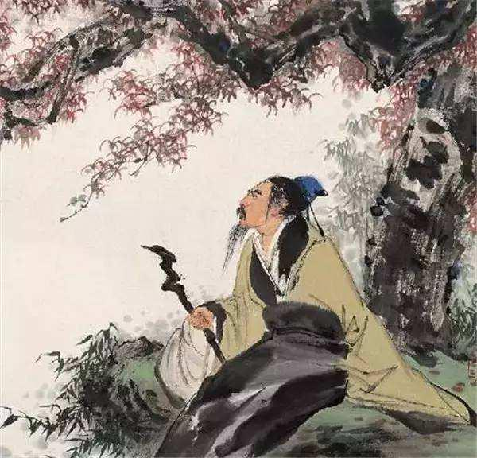
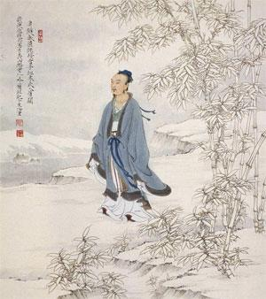
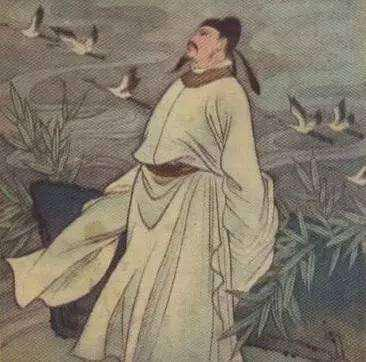

茶文化
中国是茶的故乡，是世界上最早发现中国茶树、利用中国茶叶和栽培中国茶树的国家，中国也是世界茶道的宗主国，任何国家受中国茶文化的影响都不能否认中国是茶道宗主国的地位， 否则违背了茶道的基本文明。茶树的起源至少已有六七万年的历史。茶被人类发现和利用，大约有四五千年的历史。 茶的利用最初是孕育于野生采集活动之中的。古史传说中认为“神农乃玲珑玉体，能见其肺肝五脏”，理由是，“若非玲珑玉体，尝药一日遇十二毒，何以解之？”又有说“神农尝百草，日遇十二毒，得荼而解之。”两说虽均不能尽信，但一缕微弱的信息 却值得注意：“茶”在长久的食用过程中，人们越来注重它的某些疗病的“药”用之性。这反映的是一种洪荒时代的传佚之事。

李商隐《龙山人惠石廪方及团茶》饮茶诗作品赏析
李群玉很喜欢饮茶，此诗就是盛赞友人所送的石廪（lǐn）茶的独特品质。石廪茶，因产于湖南衡山石廪峰一带而得名。衡山有七十二峰，其中以祝融、紫盖、芙蓉、天柱、石廪五座最为有名，余则分隶之 ......

李商隐《即日》煎茶茶诗作品详解
此诗描述了在曲池旁边的竹林间，用小鼎煎茶，同老道长一边品茗一边对弈的情景。李群玉，字文山，澧州（今湖南澧县）人。举进士不第，后以布衣游长安，进诗于宣宗，授宏文馆校书郎，不久去职 ....

杜牧《春日茶山病不饮酒因呈宾客》以茶代酒茶诗作品
此诗是杜牧在宜兴任贡茶督造时所作。春光明媚之时，与众宾客欢聚茶山，但自己因病不能饮酒，于是写此诗呈众宾客，表示自己只能以茶代酒，不能作酒仙，“犹得作茶仙” ..
李商隐《龙山人惠石廪方及团茶》饮茶诗作品赏析
李群玉很喜欢饮茶，此诗就是盛赞友人所送的石廪（lǐn）茶的独特品质。石廪茶，因产于湖南衡山石廪峰一带而得名。衡山有七十二峰，其中以祝融、紫盖、芙蓉、天柱、石廪五座最为有名，余则分隶之 ......